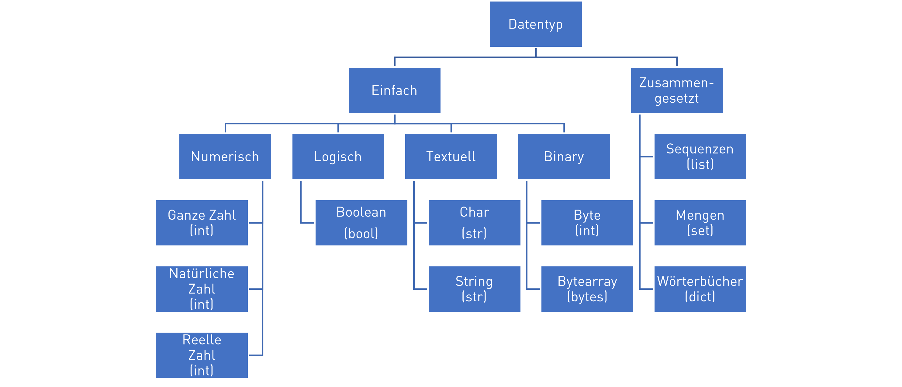

Datentypen#
Primitive Datentypen#
Variablen und Numerische Datentypen#
Fast alle Programmiersprachen benutzen Variablen, um Werte abzuspeichern. Eine Variable ist dabei eine Zuweisung eines Wertes zu einem Namen. Intern verweist dieser Name dann auf die Speicheradresse, wo der Wert gespeichert ist. Der Datentyp einer Variable bestimmt dabei den Typ des Wertes, also ob eine Zahl, ein Text oder etwas anderes abgespeichert wird.
Man unterscheidet einfache und zusammengesetzte Datentypen. Einfache Datentypen (Primitive Datentypen) können nur einen Wert des entsprechenden Wertebereichs aufnehmen. Zusammengesetzte Datentypen (Komplexe Datentypen) sind ein Datenkonstrukt, welches aus einfacheren Datentypen besteht. Da sie theoretisch beliebig komplex werden können, werden sie auch häufig schon zu den Datenstrukturen gezählt.

Python unterstützt viele von diesen Datentypen. Python selbst ist eine dynamisch typisierte Sprache. Das heißt, dass wir den Datentypen einer Variable nicht vorher festlegen müssen, sondern er dynamisch durch Zuweisung eines Wertes zur Variable festgelegt wird. Eine Zuweisung geschieht durch den ‘=’ Operator auf dessen linker Seite immer der Variablenname steht und rechts der Wert, der zugewiesen werden soll.
nummer = 1 # variablenname = wert
Der Wert einer variable kann mit print(variablenname) angezeigt werden
print(nummer)
1
In einem Notebook, wie diesem, wird automatisch auf die letzte Code-Zeile in einem Code-Block ein print() angewendet. Also können wir auch schreiben
nummer
1
Der Datentyp einer Variable wird mit type(variablenname) bestimmt und mit print(type(variablenname)) ausgegeben.
print(type(nummer)) # in einem program nutzt man die print() funktion um eine ausgabe zu erzeugen
<class 'int'>
type(nummer) # hier in einem notebook ist es unnötig, wenn es die letzte Zeile im Code-Block ist
int
Der Vorteil von Python als dynamisch typisierte Programmiersprache ist, dass Python intern die passende Repräsentation wählt. Man kann also z.B. auch problemlos sehr lange Integer Werte speichern, welche in den meisten typisierten Sprachen nicht verarbeitet werden könnten, da die Zahl zu groß ist. Dies ist insbesondere bei Berechnungen mit sehr großen Zahlen (wie Multiplikation) sehr hilfreich, da dabei keine Überläufe passieren können, wenn die Ergebnisse den Zahlenbereich überschreiten.
nummer = 1232321361278362746384633213232142142131231312323123212132313231332132312
print(type(nummer))
<class 'int'>
Boolesche Datentypen#
In allen Programmiersprachen gibt es boolesche Datentypen, um Wahrheitswerte auszudrücken und logische Operationen auszuführen.
In Python gibt es den Datentyp bool und die Wahrheitswerte True und False für Wahr und Falsch. Zu beachten ist hierbei die Großschreibung des Anfangsbuchstaben, da diese zwischen den Programmierspachen sehr stark variieren kann.
richtigoderfalsch = True
print(richtigoderfalsch)
True
Die Variable richtigoderfalsch hat den Datentypen bool.
print(type(richtigoderfalsch))
<class 'bool'>
Die komplette Großchreibung oder Kleinschreibung des Wahrheitswertes True ist z.B. nicht erlaubt.
richtigoderfalsch = TRUE
---------------------------------------------------------------------------
NameError Traceback (most recent call last)
Cell In[9], line 1
----> 1 richtigoderfalsch = TRUE
NameError: name 'TRUE' is not defined
Bei einem Fehler wird der Code nicht ausgeführt also hat sich auch der Wert der Variable nicht geändert
print(richtigoderfalsch)
True
Textuelle Datentypen#
Es gibt auch textuelle Datentypen um Zeichen (Char) und Zeichenketten (String) auszudrücken.
zeichen = 'a'
print(zeichen)
a
zeichenkette = 'hallo welt'
print(zeichenkette)
hallo welt
Python unterscheidet diese Datentypen nicht und nutzt für beide den Datentyp str.
print(type(zeichen))
<class 'str'>
print(type(zeichenkette))
<class 'str'>
Das Zeichen ist einfach ein str mit der Länge 1. Wir bestimmen die Länge mit der len() Funktion.
print(len(zeichen))
1
print(len(zeichenkette))
10
In Python kann eine Zeichenkette (String) im Code mit einfachen ' oder doppelten " Anführungszeichen geschrieben werden. Je nach dem welches Anführungszeichen muss die Zeichenkette auch mit dem gleichen Anführungszeichen beendet werden. Dies hat den Vorteil, dass sich verschachtelte Anführungszeichen nicht extra kodiert (escaped) werden müssen.
zeichenkette = "hallo 'welt'"
print(zeichenkette)
hallo 'welt'
Sollte eine Kodierung (Escaping) notwendig sein, so geschieht sie in Python mit \. Also geht die alternative Schreibweise
zeichenkette = 'hallo \'welt\''
print(zeichenkette)
hallo 'welt'
Python hat auch einige besonders einfache Syntaxzucker. Zum Beispiel kann man Formatierte Zeichenketten einfach erzeugen, indem wir ein f vor die Zeichenkette schreiben. In dem String kann man dann direkt Variablenwerte schreiben mit {variablenname} die dann in der Zeichenketten vor Ausgabe ersetzt werden.
zeichenkette = f"der wert von nummer ist '{nummer}'"
print(zeichenkette)
der wert von nummer ist '1232321361278362746384633213232142142131231312323123212132313231332132312'
Binäre Datentypen#
Binäre Datentypen können beliebige Zeichen repräsentieren. Sie kommen häufig vor, wenn man Dateien lädt wie Bilder, CAD-Dateien, etc. In Python kann man sie auch als String repräsentieren, indem man vor dem String b schreibt. Das erzeugt einen binären String (auch Bytearray), dessen Datentyp in Python ist ´bytes`.
wort = b"byte"
print(type(wort))
<class 'bytes'>
Der Wert eines einzelnen Byte in dem Bytearray ist normalerweise eine natürliche Zahl von 0 bis 255. In Python wird hierfür ein ´int´ benutzt. Das lässt sich zeigen, indem man auf den Index eines einzelnen Bytes in dem Bytearray zugreift.
print(type(wort[0]))
<class 'int'>
Komplexe Datentypen#
Sequenzen#
Sequenzen sind eine geordnete Abfolge an Werten. Sequenzen werden in Programmiersprachen meist als Array bezeichnet. Array haben oft eine feste, unveränderliche Länge und nur Werte von einem Datentyp, der bei der Erzeugung definiert wird. Die Werte in dem Array sind allerdings veränderlich.
Listen sind ein weiterer typischer Datentyp für Sequenzen. Listen haben oft keine feste Länge und können beliebig erweitert werden.
Python unterstützt den Datentyp Array nicht, sondern nur Listen (list) und Tupel (tuple). Beide können unterschiedliche Datentypen enthalten. list werden durch eckige Klammern deklariert, mit den einzelnen Werten die durch Komma getrennt werden. Diese Werte können unterschiedliche Datentypen haben.
liste = [1, 2, 3, "a", True]
print(liste)
print(type(liste))
[1, 2, 3, 'a', True]
<class 'list'>
Einzelne Werte in einer Liste können überschrieben werden. Dazu kann man auf einzelne Indexe in der Liste zugreifen.
liste[1] = "anders"
print(liste)
[1, 'anders', 3, 'a', True]
Listen können modifiziert werden und dadurch ihre Länge ändern (weshalb sie keine Arrays sind). Um ein neuen Wert an die Liste anzuhängen kann die append()-Funktion der Liste genutzt werden.
liste.append(False)
print(liste)
[1, 'anders', 3, 'a', True, False]
Die Länge der Liste kann mit der Funktion len() bestimmen.
print(len(liste))
6
tuple haben im Vergleich zu Listen eine feste Länge in Python. Da sie unterschiedliche Datentypen enthalten können, sind sie auch keine Arrays.
tuple = (1,2,3,"a", True)
print(tuple)
print(type(tuple))
(1, 2, 3, 'a', True)
<class 'tuple'>
tuple sind im Gegensatz zu Listen unveränderlich (immutable).
tuple[0]=True
print(tuple)
---------------------------------------------------------------------------
TypeError Traceback (most recent call last)
Cell In[27], line 1
----> 1 tuple[0]=True
2 print(tuple)
TypeError: 'tuple' object does not support item assignment
Zusätzlich gibt es den besonderen Datentyp range um Sequenz von ganzen Zahlen zu erzeugen. Sie werden mit der Funktion range erzeugt.
zahlenfolge = range(1,10)
print(zahlenfolge)
print(type(zahlenfolge))
range(1, 10)
<class 'range'>
Um auf ein Element zuzugreifen wird die Elementzahl in eine eckige Klammer geschrieben. In Python wird der Index in einer Liste ab 0 gezählt (ab 1 in einigen Programmiersprachen).
print( liste[0] ) # gibt das erste Element aus
print( liste[1] ) # printed das zweite Element aus
1
anders
Eine Besonderheit in Python ist, dass auch negative Indizes erlaubt sind um das Ende von Listen zuzugreifen (sowas nennt man unter Programmierern Syntaxzucker).
print( liste[-1] ) # gibt das letzte Element aus
print( liste[len(liste)-1] ) # wäre die übliche umständliche Variante das letze Elemente auszugeben über die Länge len(x)
False
False
In Python kann auch auf Listenteile zugegriffen werden durch Slicing. Das kann man nutzen, um Teillisten zu erzeugen.
print(liste[0:10]) # greift auf die ersten zehn Element zu (ohne 10)
print(liste[:10]) # greift auch auf die ersten zehn Element zu (ohne 10)
print(liste[-10:]) # greift auf die letzten zehn Element zu
[1, 'anders', 3, 'a', True, False]
[1, 'anders', 3, 'a', True, False]
[1, 'anders', 3, 'a', True, False]
Mengen#
Mengen stellen eine Gruppe an Werten ohne Wiederholungen dar, so wie in der Mathematik.
Der Datentyp für Mengen in Python heißt set. Sie werden durch geschweifte Klammern deklariert.
menge = {1, 2, 3}
print(menge)
print(type(menge))
{1, 2, 3}
<class 'set'>
Mengen kann man gut nutzen, um z.B. alle einzigartigen Werte in einer Liste mit Wiederholungen zu finden wie aus einer Namensliste.
listemitwiederholung = list([1,2,2,2,2,2,3])
menge = set(listemitwiederholung)
print(menge)
print(type(menge))
{1, 2, 3}
<class 'set'>
Ein andere wichtige Anwendung von Sets ist, um zu prüfen ob ein Element in dem Set ist. Dies kann man mit dem Schlüsselwort in machen
1 in menge
True
Das geht genauso bei der Liste ist allerdings langsamer, insbesondere wenn die Liste sehr groß ist (>> 1000 Länge).
1 in listemitwiederholung
True
Wörterbücher#
Wörterbücher werden in vielen Programmiersprachen genutzt, um Schlüssel-Wert-Paare zu verwalten, wie zum Beispiel die Eigenschaften und ihre Werte eines Datenobjektes. Wörterbücher bilden mathematisch eine Abbildung von einer Menge an Schlüsseln auf eine Menge an Werte dar (Key-Value). Die Menge der Schlüssel darf keine Wiederholung aufweisen, die Menge der Werte schon.
Wörterbücher werden in den meisten Programmiersprachen als Map (von engl. Mapping = Abbildung) bezeichnet. In Python werden sie als dict bezeichnet. Sie werden durch geschweifte Klammern und Schlüssel/Wert-Paaren definiert.
haus = {
"Gebäudetyp": "Wohnhaus",
"Baujahr": 2022
}
print(haus)
print(type(haus))
{'Gebäudetyp': 'Wohnhaus', 'Baujahr': 2022}
<class 'dict'>
Neue Werte können den Wörterbüchern hinzugefügt werden, indem man einem Schlüssel als Index einen Wert zuweist.
haus['Material'] = "Stein"
print(haus)
print(type(haus))
{'Gebäudetyp': 'Wohnhaus', 'Baujahr': 2022, 'Material': 'Stein'}
<class 'dict'>
Auch hier kann man testen, ob ein Element im dict ist.
'Material' in haus
True
Werte können über den Index auch gelöscht werden mit dem Schlüsselwort del.
del haus['Material']
print(haus)
print(type(haus))
{'Gebäudetyp': 'Wohnhaus', 'Baujahr': 2022}
<class 'dict'>
Null-Werte#
In vielen Programmiersprachen gibt es auch einen Wert, um einen fehlenden Wert darzustellen, z.B. wenn etwas nicht da ist. Der Null-Wert in Python heißt None und sein Datentyp ist NoneType.
noch_kein_wert = None
print(noch_kein_wert)
print(type(noch_kein_wert))
None
<class 'NoneType'>
Der None Wert wird oft genutzt, um zum Beispiel zu markieren, dass eine Variable zwar existiert, aber noch kein Wert zugewiesen wurde.
Caution
Der Null-Wert ist in der Informatik umstritten, da er zu Fehlern führen kann, wenn Programmiersprachen ihn sehr oft benutzen (wie Java). Einige sehr moderne Programmiersprachen haben ihn deshalb abgeschafft. Das Problem ist, dass man nicht unterscheiden kann, ob etwas None - nicht definiert - oder None - als Null definiert - ist.
Das passiert auch in Python. Die get() Funktion eines dict gibt z.B. den Wert für ein Schlüssel im Wörterbuch und None wenn dieser nicht vorhanden ist.
print(haus.get('schluessel_fehlt'))
None
Allerdings kann man auch None einem Wert im Dictionary zuweisen.
haus['ist_none'] = None
print(haus.get('ist_none'))
None
In beiden Fällen gibt die get() Funktion None zurück und können nicht mehr direkt unterscheiden, ob der Wert nicht da oder None ist.